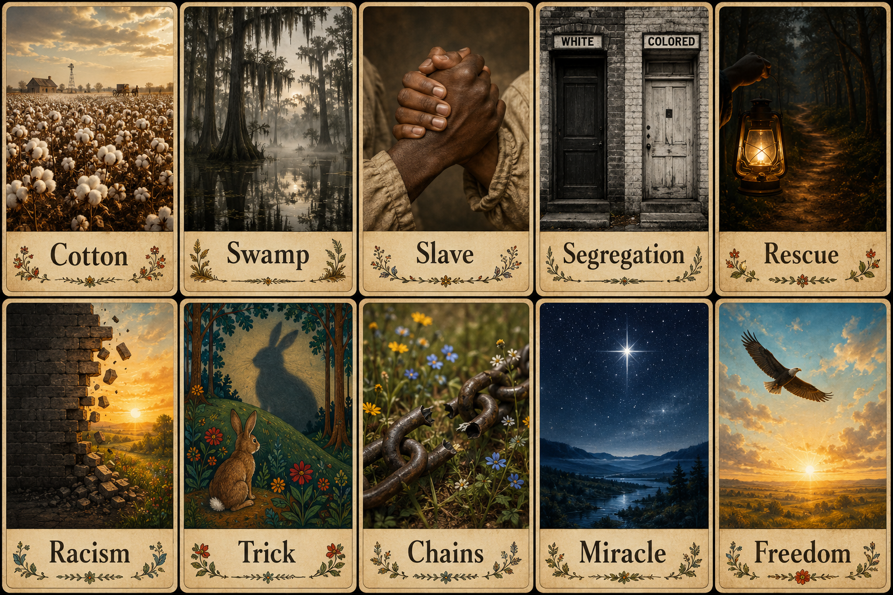
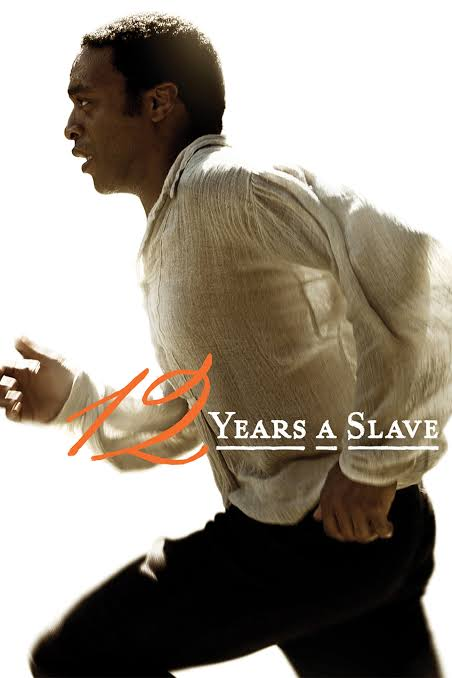

Summarizing a Text · Einen Text zusammenfassen
Before you read, learn these important words.
🇩🇪 Lerne diese wichtigen Wörter, bevor du den Text liest.

Look at the pictures — what do these words make you think of?
🇩🇪 Schau dir die Bilder an — woran erinnern dich diese Wörter?
This is a real story. Solomon Northup was a free Black man who was kidnapped and forced into slavery for 12 years in the Deep South of America. He later wrote a book about his experiences.
🇩🇪 Dies ist eine wahre Geschichte. Solomon Northup war ein freier Schwarzer Mann, der entführt und 12 Jahre lang in die Sklaverei gezwungen wurde.

The main idea is the most important message of the whole text — not every little detail!
(Die Hauptidee ist die wichtigste Aussage des Textes — nicht jedes kleine Detail!)
Three sentences describe the text. Which one best describes the overall main idea? Tick the correct one.
(Welcher Satz beschreibt die Hauptidee am besten? Kreuze den richtigen an.)
Read each diary entry again and write its main idea in a few words. Focus on what happens — not on small details.
(Lies jeden Eintrag noch einmal und schreibe die Hauptidee in wenigen Worten auf. Fokussiere dich auf das Wichtigste.)
A good summary only includes the most important information. Read each sentence and decide:
👍 Important — keep it in your summary |
✂️ Extra — leave it out
(Eine gute Zusammenfassung enthält nur die wichtigsten Informationen. Entscheide: Wichtig oder Extra?)
Use the sentence starters below to write a mini-summary for each part of the story. Use only the important information you found above!
(Verwende die Satzanfänge, um eine Mini-Zusammenfassung für jeden Teil zu schreiben. Nutze nur die wichtigen Informationen von oben!)
Watch this short video about summarising strategies. It will help you write your final summary!
(Schau dir das Video über Zusammenfassungs-Strategien an — es hilft dir, deine abschließende Zusammenfassung zu schreiben.)
After watching: Write down two tips from the video for writing a good summary:
Use your mini-summaries from Step 3 to complete this guided summary paragraph. Fill in every blank.
(Verwende deine Mini-Zusammenfassungen aus Schritt 3, um diesen geführten Absatz zu vervollständigen.)
You have read Solomon's diary. Now imagine you are Anne — Solomon's wife.
You have not heard from Solomon for 12 years.
Write a short diary entry (4–6 sentences) from Anne's point of view
on the evening Solomon comes home.
(Stell dir vor, du bist Anne — Solomons Frau. Schreibe 4–6 Sätze aus ihrer Sicht an dem Abend, als Solomon nach Hause kommt.)